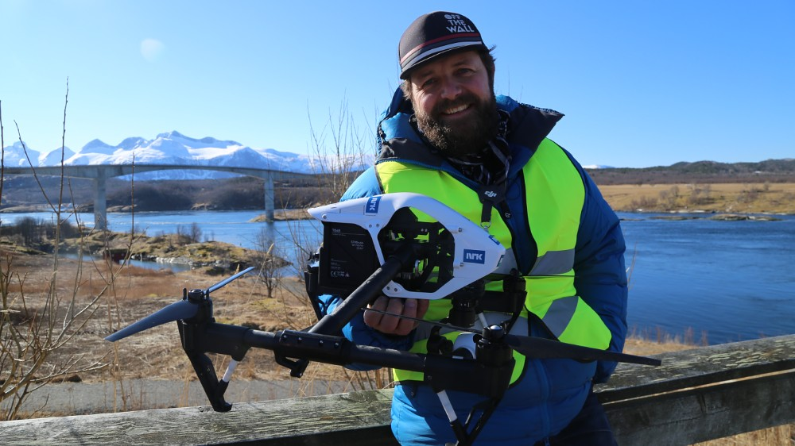

Journalistikk og kartdata hos en almennkringkaster
Offentlig kringkaster
~3500 ansatte
56 kontorer Norge
Radio, TV og nett
Sakte-TV


Kartografi / illustrasjoner
Terrengvisualisering
Journalistikk
Kartografi


Terrengvisualisering


